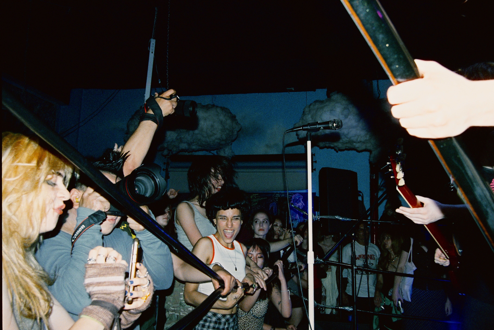
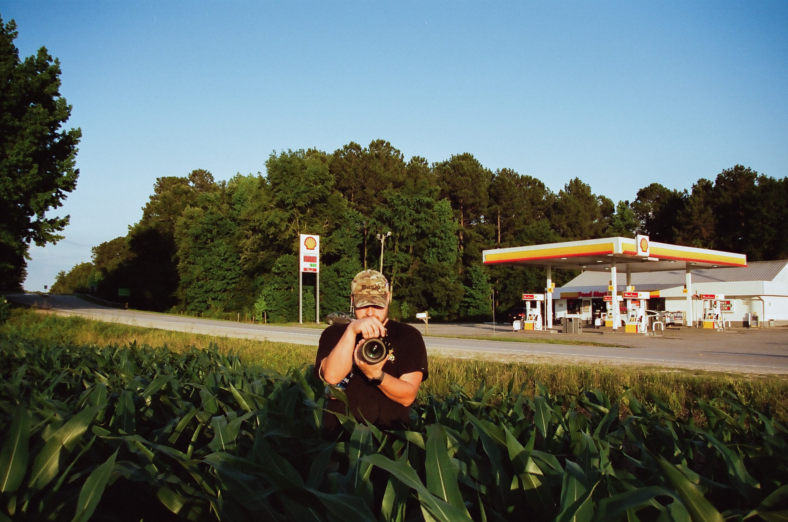
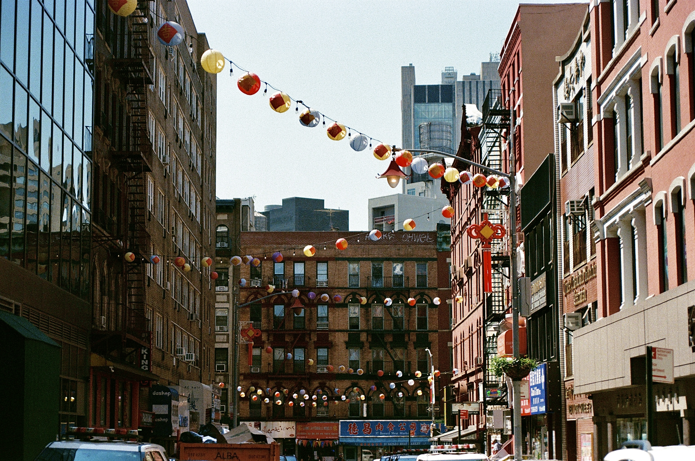
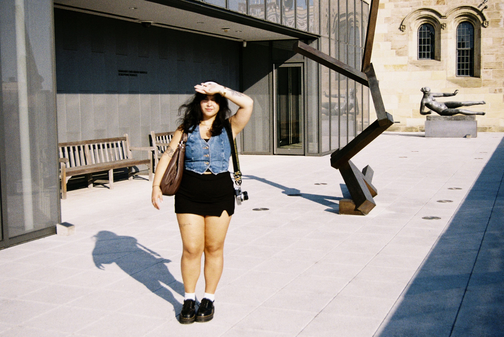
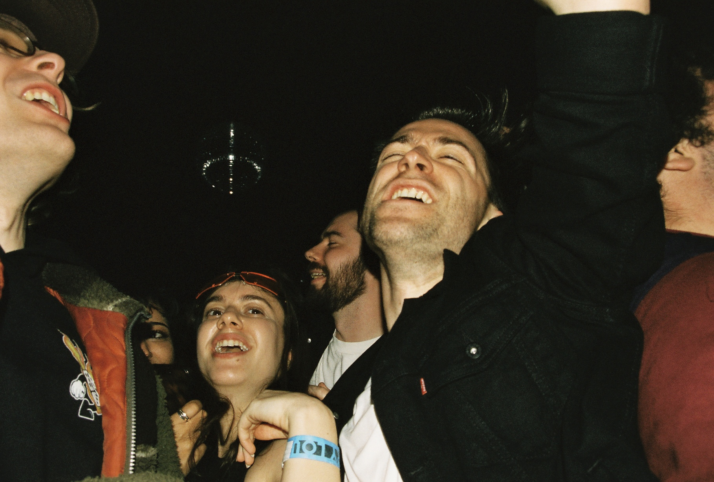

color film
a venue in brooklyn that doesn't seem to exist online, except where the address is listed on show fliers. the stage is a boxing ring. sometimes performers climb and jump off of those ropes.

one of my younger brothers takes a photo of me during a pitstop on a roadtrip to florida. he was the first person i knew to start shooting film and developing at home. he shoots digital these days - take a look at the photo he took at the bottom of this page.

a sunday afternoon's walk through chinatown.

a trip to new haven for my friend's birthday. too hot out for september.

at the front of the crowd for a friend's concert, i decided to turn around and see what was happening behind me. i think that crowds can be more fun to look at than performers.